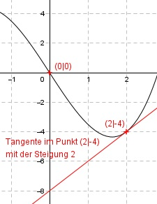

Aufgabe 28 Der Graph einer ganzrationalen Funktion 3. Grades hat im Nullpunkt einen Wendepunkt und im Punkt (2|-4) die Steigung 2. Wie lautet seine Funktionsgleichung?  Allgemeine Form einer ganzrationalen Funktion 3. Grades, die im Nullpunkt einen Wendepunkt hat (Punktsymmetrie): f(x) = ax3 + cx f’(x) = 3ax2 + c f’’(x) = 6ax 2 Bedingungen: 1. Hat im Punkt (2|-4) die Steigung 2 bedeutet zum einen: f(2) = -4 --> a * 23 + c * 2 = -4 --> 8a + 2c = - 4 I 2. Hat im Punkt (2|-4) die Steigung 2 bedeutet zum anderen: f’(2) = 2 --> 3a * 22 + c = 2 --> 12a + c = 2 II II * (-2) + I -24a - 2c = -4 8a + 2c = -4 ---------------- -16a = -8 | :(-16) a = 0,5 a = 0,5 in I eingesetzt: 8 * 0,5 + 2c = -4 4 + 2c = -4 |-4 2c = -8 |:2 c = -4 Gesuchte Funktionsgleichung: f(x) = 0,5x3 - 4x